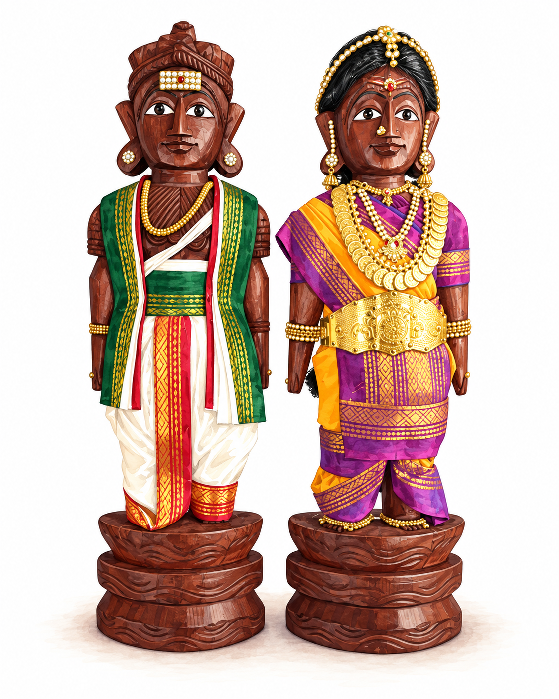
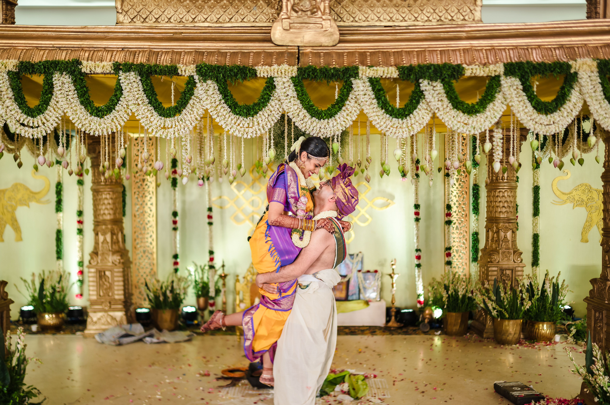

Marapachi Bommai – A Wedding Tradition

Marapachi Bommai are traditional wooden dolls from South India, usually found as a pair representing a bride and groom. They're a staple of many Golu displays, but they also have a special connection to weddings.
Traditionally, when a couple gets married, they're gifted a pair of Marapachi dolls, often by the bride's parents. The idea is quite lovely: until marriage, each person celebrates Golu as part of their parents' household. When they get married, they receive their own pair of dolls so they can begin the tradition in their new home.
The dolls are also dressed up every year, often in miniature wedding attire. And if you've seen our wedding pictures, you might notice that our dolls' outfits look rather familiar! My aunt's sister is very artistically gifted. She designed and created ours (everything from the hair to the jewelry to the clothes!) to match what we wore at our wedding.
